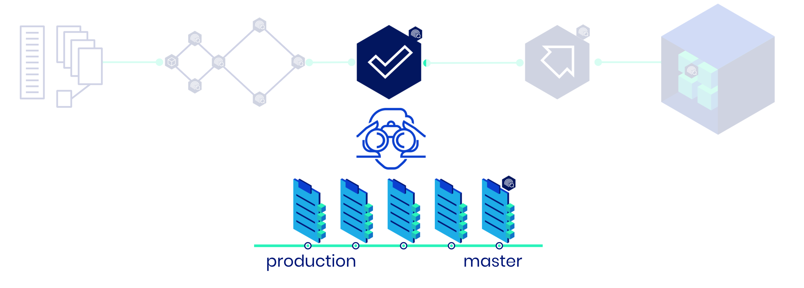

Creating Approvals¶
Many software development processes require an active decision to document an approval for deployment. This Human-in-the-Loop decision must be taken by someone responsible for accepting the risk of a given deployment. In order to be able to accept the risk, two criteria must be fulfilled:
The change must be understood
The acceptance must be documented
You can create the documentation for this approval automatically in your pipelines using Merkely’s log_approval command.
Merkely makes a dashboard for the cumulative change in the deployment, based on a list of the source git commits. Provide two git references: one for what is currently in production, and one for what you would like to deploy. The command will generate the git commit list between these two commits.
In this example from the image above, to create the approval for deploying the artifact created at the master commit you would use the following parameters in the log_approval:
MERKELY_OLDEST_SRC_COMMITISH |
production |
MERKELY_NEWEST_SRC_COMMITISH |
master |
Pipeline approvals vs. Merkely approvals¶
Merkely provides two methods for documenting deployment approvals:
Pipeline approval: an approval accepted externally to Merkely, for instance in an external CI tool.
Merkely approval: an approval to be accepted in Merkely.
To create a pipeline approval, simply set the MERKELY_IS_APPROVED parameter to TRUE. This will allow you to document an approval for example made in your CI tool and set it immediately to approved. If you set this instead to FALSE, it is possible to approve in the Merkely application.
Tracking branches for production¶
In a typical setup, you need to add a production tracking branch in git that is updated on every deployment. For example:
1 2 3 4 | git checkout production
git merge --ff-only master
# YOUR DEPLOYMENT COMMAND HERE
git push origin production
|